One island scene built only from sprites generated this morning with Retro Diffusion, laid on the chunky grid of D188 (one art pixel is four screen pixels on desktop, three on a phone) under the approved HUD. Nothing here is from a bought pack. It is a mood mock, not the game: the real scene is drawn by PixiJS from the same kind of sprites.
A new player's island a few minutes in: the first pine still crowned as the tap target, the Workshop bought, one survivor hired, the car wreck on the shore and a supply crate washed up. The ruined coast across the water is the far layer.
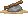
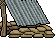
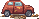
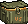
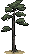
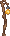
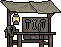
Supply DropOpen · 1 waitingEverything in the scene is a Retro Diffusion output: the props and the survivor from the pro model, the bands cropped out of its environment renders. The sky gradient, the sun, the sea depth and the glows are CSS, which is what the game's palette layer would do.
Night is a tint and three lights. The lamp post, the bench lantern and the shelter stay lit, the pine keeps its tap ring, and the HUD does not change. Night tint and glows sit on separate layers, as CLAUDE.md 6.1 already asks.
Later the same day: the Workshop runs, a Frenzy is nearly full, two drops wait. The lit windows and the lantern pools are CSS on the lights layer.
Zoom 3. The camera is framed on the pine, which stands 180 CSS px tall, well over the 120 px the spec asks for (N27). The bench is one thumb to the right.
Every output at four times its size, untouched except for the four crops. Two takes each for the bench, the pine and the survivor; the scene uses the second bench, the upright pine and the first survivor.
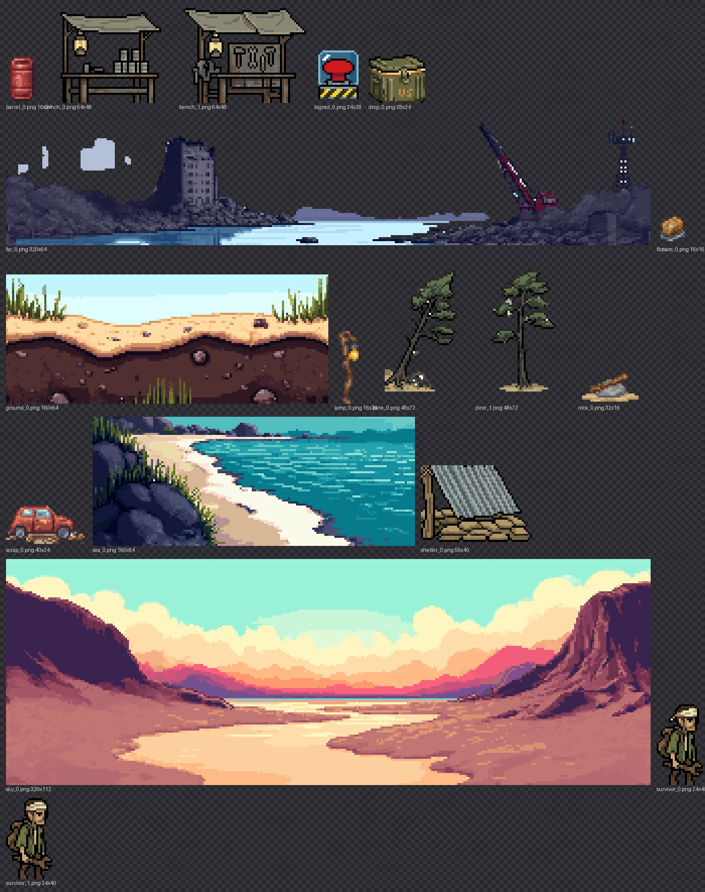
The survivor above, padded to 32 × 48 and sent back in as the input image. Eight frames each, idle and walking, 0.14 USD a cycle. The day frames use the idle cycle at the bench; at night the hand walks in from the shore.
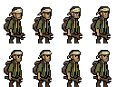
Idle, 4 × 2 frames.
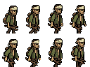
Walking, 4 × 2 frames.
| Asset | Model | Size (art px) | Cost | Verdict |
|---|---|---|---|---|
| Workbench, two takes | pro, platformer | 64 × 48 | 0.36 | Both usable. Side view held, the lamp and the tarp roof came through. |
| Pine, two takes | pro, platformer | 48 × 72 | 0.36 | Both good. The leaning one is the better tap target later. |
| Survivor, two takes | pro, platformer | 24 × 40 | 0.36 | Near-identical takes from one seed. Readable at 24 px, wrench and pack present. |
| Shelter, supply crate, Big Red | pro, platformer | 56 × 40 and smaller | 0.54 | All three usable as drawn. |
| Car wreck, barrel, lamp post, flotsam, rock | plus, low res | 40 × 24 and smaller | 0.30 | The cheap model is fine for props this small. The flotsam came back as a sack, not a crate. |
| Sky, far coast, sea, ground | plus, environment | 320 × 112 down to 160 × 64 | 0.24 | The style paints whole landscapes and ignores "no ground, no sky". Cropped: clouds, the ruin line, a water tile, the beach cross-section. |
| Survivor idle and walk cycles | advanced animation | 32 × 48, 8 frames | 0.28 | Both coherent; the outline came back a touch heavier than the source. |
| Total | 2.44 | USD, from the 10 loaded. Balance after: 7.97. |